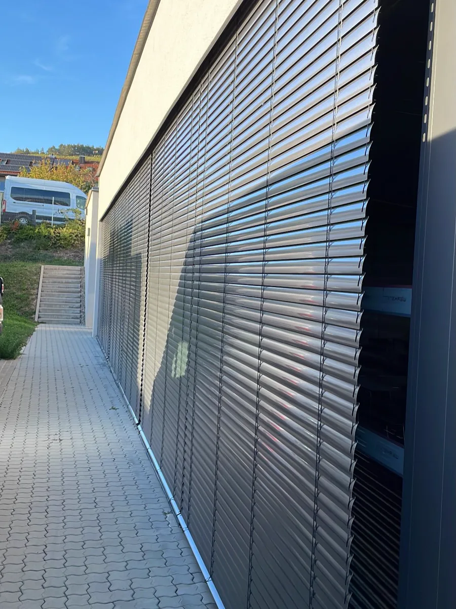
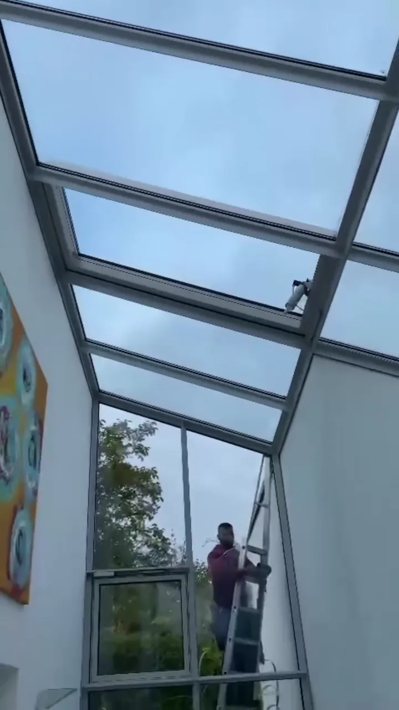
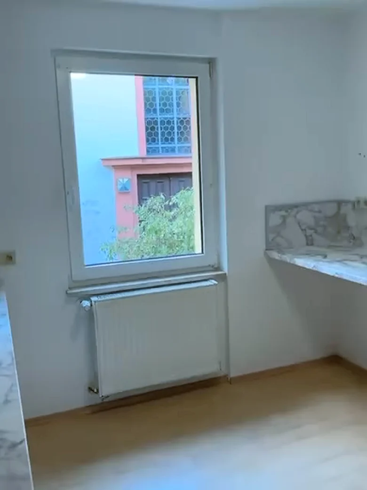

Unsere Arbeit.
Für diese Kunden waren wir in Bad Kissingen und Umgebung im Einsatz.
Autohaus Löffler, Ford
Glasreinigung außen: Glasturm, Fensterfront und Sektionaltor.


Lebenshilfe Hammelburg
Glas und Fassade, auch mit Teleskopstange und Wasserzufuhr.

GoFit, Bad Kissingen
Eingangstüren und Fenster im Fitnessstudio in Bad Kissingen.

Hescuro
Glasreinigung, auch in der Höhe mit Sicherheitsgurt.


Komplettreinigung einer Wohnung
Vorher und nachher, aus demselben Einsatz.




Weitere Einsätze.
Schauen wir uns Ihr Gebäude an.
Kostenfrei und 100 % unverbindlich.
Naqeeb Ullah Saifi, Inhaber